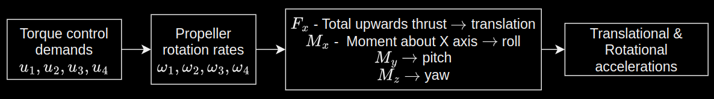

Overview
What causes a drone to accelerate?
Torques generated in the rotors affect their rotation rates which creates forces and moments on the drone which in turn cause translational and rotational accelerations.
